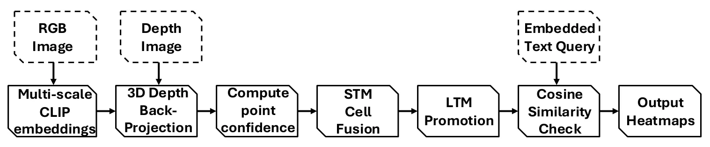
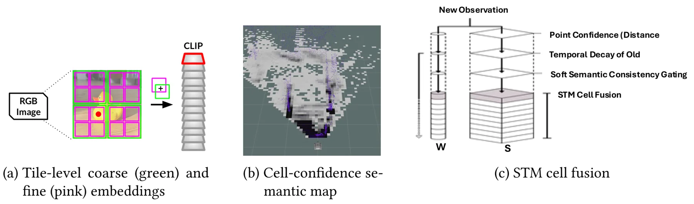
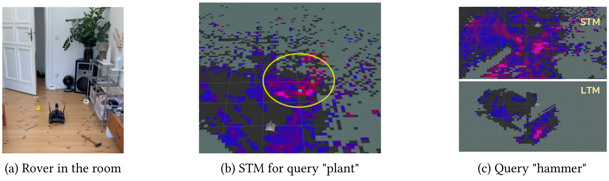

CrossMaps：面向火星车导航的置信感知开放词汇语义地图CrossMaps: Confidence-Aware Open-Vocabulary Semantic Mapping for Rover Navigation
与机器人语义建图、导航代价和 SLAM 系统集成高度相关，且明确强调 Jetson Orin 实时部署；主要不确定点是底层 SLAM 位姿不确定性、动态环境和长期地图一致性的处理细节。
一句话工作总结
CrossMaps 把 CLIP 开放词汇语义、RGB-D 几何置信度和短/长期记忆结合起来，生成可查询的实时 rover 语义地图。
摘要
Rover 依赖感知系统维护空间地图，地图不仅需要编码物体语义，也需要编码传感质量，例如测距可靠性、光照伪影和数据密度，从而指导数据融合、语义嵌入更新和部分可观测条件下的导航。CrossMaps 提出一个实时置信感知开放词汇语义建图管线，从 RGB-D 数据构建可自然语言查询的地图。方法继承 VLMaps 风格，集成多尺度 CLIP 嵌入、置信感知融合，以及由短期记忆和长期记忆组成的双记忆架构。短期记忆用几何、语义和时间置信 cues 聚合噪声视觉观测；置信且一致的栅格会被提升到长期记忆，作为持久语义 landmark。系统面向 Jetson Orin 驱动的 UGV 与 SLAM 并行部署，可实时生成语义 heatmap，用自然语言查询指导 rover 导航。
Rovers rely on perception to maintain spatial maps that encode both objects and sensor quality (e.g., range reliability, lighting artifacts, data density), guiding data fusion, embedding updates, and navigation under partial observability. To study these coupled perception-navigation processes, we present CrossMaps, a real-time confidence-aware open-vocabulary semantic mapping pipeline that constructs language-queryable maps from RGB-D data. Building on VLMaps-style approaches, CrossMaps integrates multi-scale CLIP embeddings with confidence-aware fusion and a dual-memory architecture consisting of Short-Term Memory (STM) and Long-Term Memory (LTM). The STM aggregates noisy visual observations using geometric, semantic, and temporal confidence cues, while confident and coherent cells are promoted to the LTM as persistent semantic landmarks. Designed for deployment with a Jetson Orin-powered UGV alongside SLAM, CrossMaps runs in real time and produces semantic heatmaps that can be queried with natural language to guide rover navigation.
中文解读摘录
- 链接：abs / PDF；作者：Jan-Niklas Klein, Sona Ghahremani, Christian Medeiros Adriano, Holger Giese；类别：cs.RO, cs.AI, cs.LG；采集 score=16。
- 核心思路：面向 rover 导航构建可自然语言查询的语义地图，同时显式建模传感质量、几何置信度、语义置信度和时间一致性。
- 方法要点：在 VLMaps 风格 RGB-D 语义建图上集成多尺度 CLIP embedding；使用 Short-Term Memory 聚合噪声观测，并把置信且一致的栅格提升到 Long-Term Memory，形成持久语义 landmark。
- 关注点：与 SLAM 并行部署在 Jetson Orin UGV 上，强调实时性；建议重点看其地图坐标系如何接入 SLAM 位姿、置信融合是否能抵抗光照/深度噪声，以及语义 heatmap 如何转成导航代价。
图表/页面预览
{kind=link}

{kind=link}

{kind=link}
